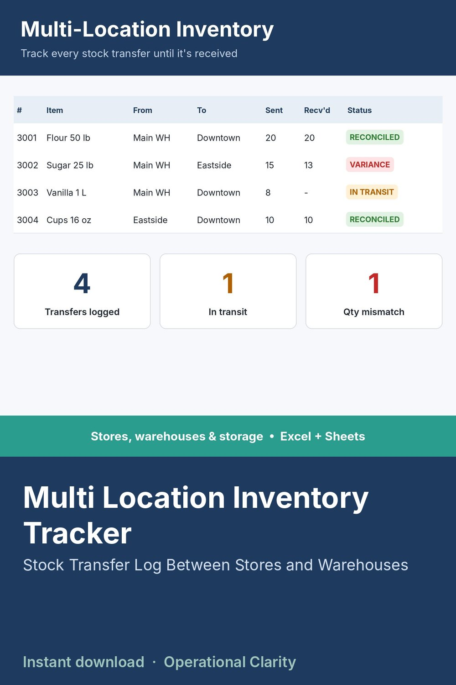

Multi Location Inventory Tracker

MULTI LOCATION INVENTORY TRACKER | Stock Transfer Log Between Stores & Warehouses | Excel & Google Sheets
Stop losing track of stock the moment it leaves one location for another. This inventory spreadsheet tracks every transfer from the moment it's sent until it's confirmed received, so nothing falls into a gap between your stores, warehouses or storage units.
WHAT IT DOES
• Log every transfer between locations: item, quantity sent, quantity received and dates
• Automatically flags shipments still in transit and shipments that arrived with a quantity mismatch
• Closes the gap a single-location inventory sheet can't: stock isn't lost, it just isn't reconciled yet
BEST FOR
Businesses with two or more stores, warehouses, market stalls or storage units that need to know what has actually arrived and what is still on the way.
WHAT YOU GET
• Stock transfer tracker spreadsheet (.xlsx). No macros, no add-ins.
• START HERE tab with plain-English setup instructions
• Sample data so you can see it working before you enter your own
COMPATIBILITY
Works in Microsoft Excel 2010 and newer. For Google Sheets, upload the file to Google Drive and open it with Google Sheets.
GOOD TO KNOW
• This is a digital download. No physical item will be shipped. Because this is a digital product, all sales are final.